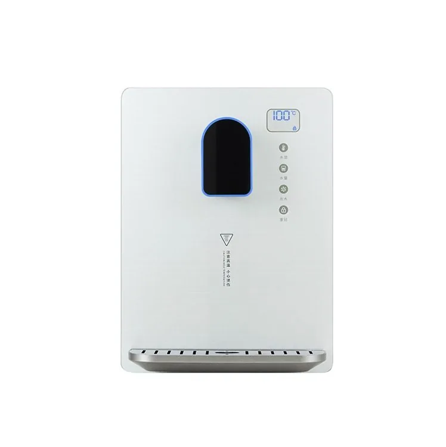

White Color Water Dispenser MT-B600
SY-0823F Instant Heating Water Dispenser – Pearl White — Tempered-glass, three-second instant-heating design with an electronic child lock, five water-volume settings and five temperature settings. Rated power: 2,200 W.
Send Inquiry